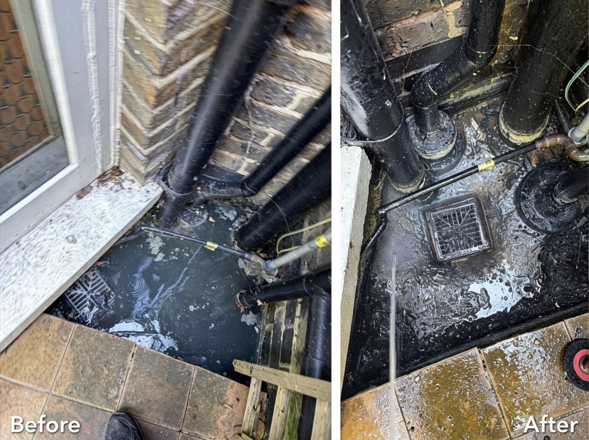
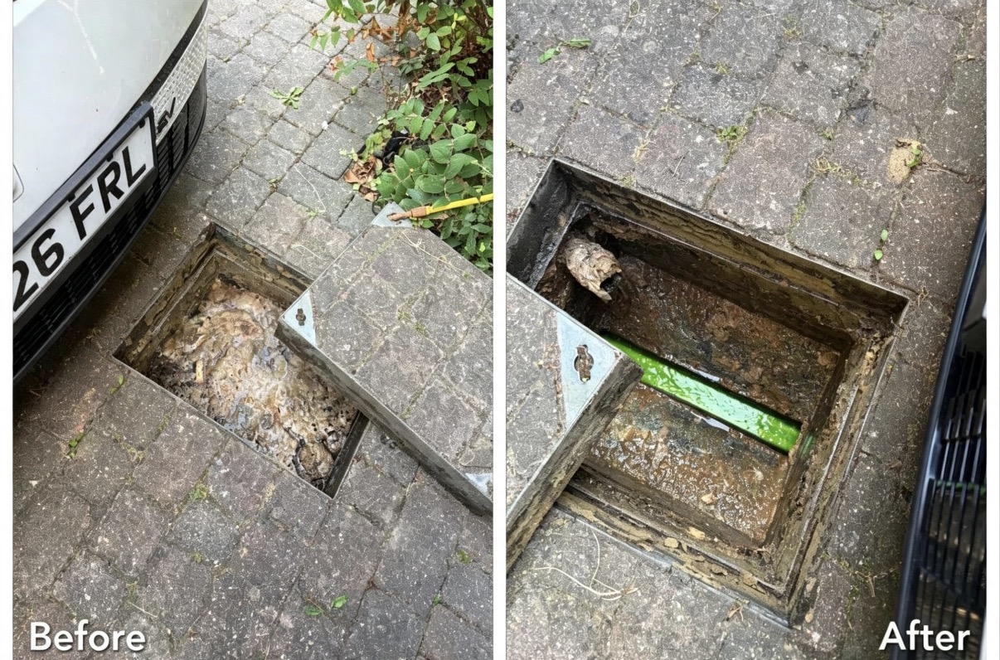

Blocked Drains
Cleared Fast
Professional drainage engineers covering London & surrounding areas. Emergency call outs, CCTV surveys, drain repairs and high pressure water jetting.
Professional Drainage Solutions
Fast, reliable drainage services for homes and businesses across London and the surrounding areas.
🚿 Blocked Drains
Fast clearance of sinks, toilets, baths, gullies and external drains.
📹 CCTV Surveys
Professional drain inspections using the latest CCTV camera technology.
🔧 Drain Repairs
Repairs for cracked, collapsed and damaged drainage systems.
💦 High Pressure Jetting
Powerful jetting removes grease, roots and stubborn blockages.
🚨 Emergency Call Outs
24/7 rapid response for urgent drainage problems.
🏢 Commercial Drainage
Reliable drainage maintenance and repairs for commercial properties.
Trusted Drainage Specialists
We pride ourselves on fast response times, honest pricing and quality workmanship.
Fast Response
Emergency engineers available 24 hours a day across London.
Fully Insured
Professional drainage specialists you can trust.
Honest Pricing
Clear quotations with no hidden charges.
5-Star Service
Trusted by homeowners, landlords and businesses.
See Our Latest Work
Here are a few examples of drainage work completed across London and the surrounding areas.

Blocked Drain Clearance
Emergency blockage cleared using high-pressure water jetting.

Drain Repair
Professional repair completed with minimal disruption.

CCTV Drain Survey
Camera inspection used to identify and diagnose drainage issues.
Trusted By Homeowners & Businesses
We take pride in providing fast, reliable and professional drainage services.
"Fantastic service. Arrived quickly, solved the blockage and left everything clean."
Sarah M.
"Very professional from start to finish. Highly recommend FLOWPOINT."
James T.
"Fast response and excellent workmanship. Will definitely use again."
Michael R.
Need an Emergency Drain Engineer?
Available 24 hours a day, 7 days a week across London and the surrounding areas.
📞 Call 07506 491178